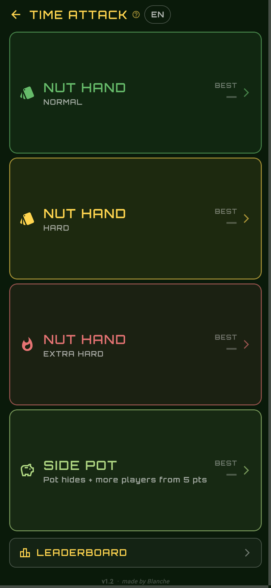
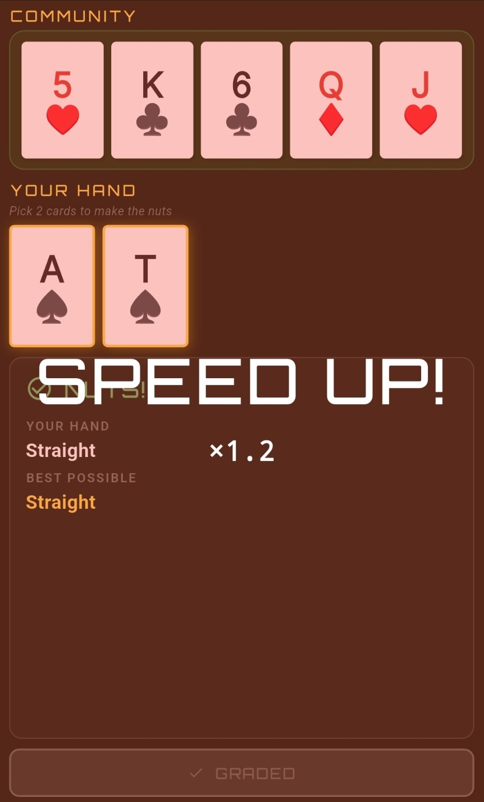
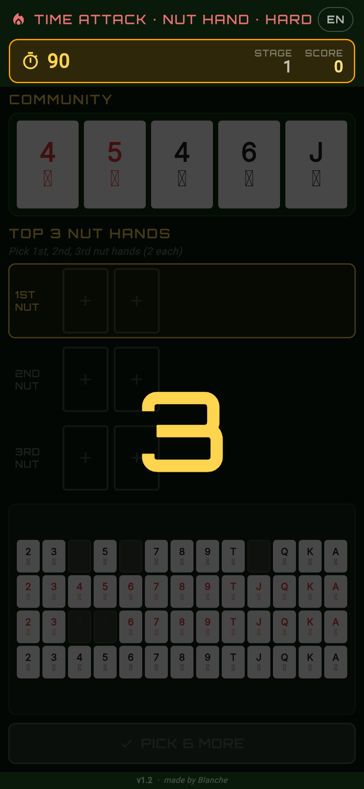
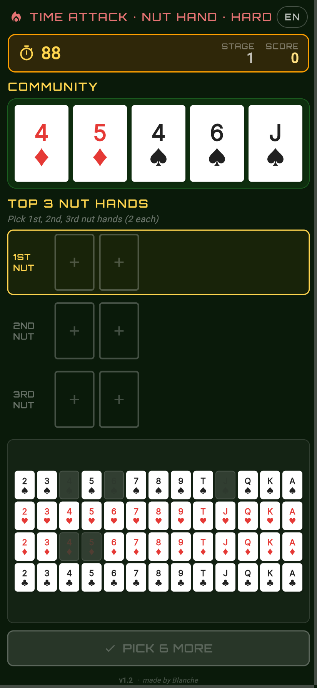
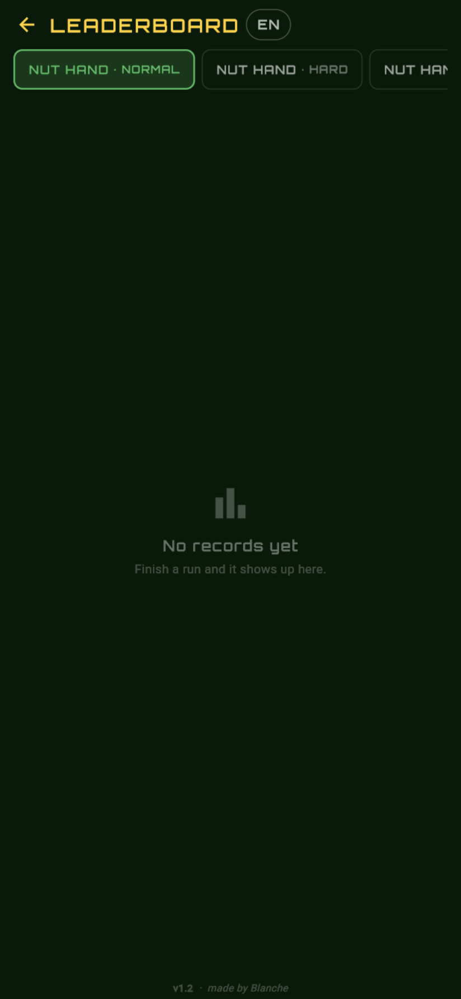
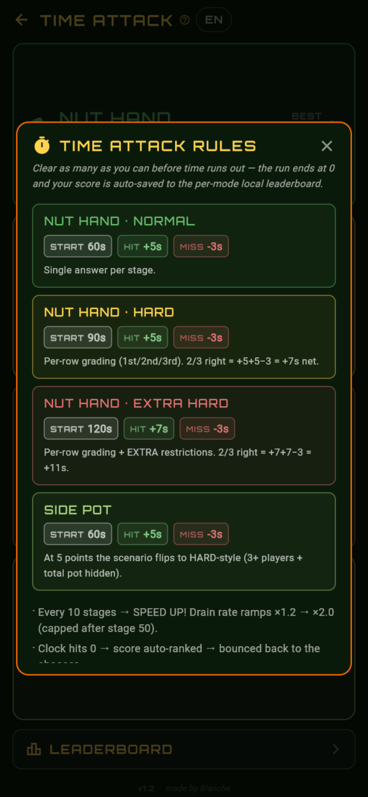

TIME ATTACK 모드
4개 세부 모드 — NUT HAND NORMAL · HARD · EXTRA HARD · SIDE POT —
각각 별도의 시작 시간과 보너스 밸런스로 진행. 모드별로 로컬 top-10 리더보드 가
영구 저장되어 점수와 스테이지, 날짜를 확인할 수 있습니다.
- 시작: NORMAL·SIDE POT 60s · HARD 90s · EXTRA HARD 120s
- 정답 +5초 (EXTRA HARD 는 +7초), 오답 −3초
- HARD / EXTRA HARD 는 1st/2nd/3rd 줄당 채점 — 2/3 정답이면 +5+5−3 = +7s 순이익
- SIDE POT 은 5점 도달 시 자동으로 HARD 시나리오 (3+명 + 총 팟 숨김) 으로 전환

4모드 chooser — 각 모드에 BEST 점수 표시 + LEADERBOARD 진입
SPEED UP! 시스템
스테이지 10마다 시계가 빨라집니다. 0-9 스테이지는 정상 속도, 이후 ×1.2 → ×1.4 → … → ×2.0 까지
가속하며, 스테이지 50 이후 cap 적용으로 더 빨라지지는 않습니다.
전환 시 화면 전체에 반투명 빨간 wash 가 깔리며 중앙에 "SPEED UP!" 이 표시됩니다.

×1.2 진입 순간 — 정답 결과 위로 빨간 wash 가 깔리며 중앙에 SPEED UP! 표시
3-2-1-GO! 카운트다운
TIME ATTACK 진입 시 게임 시작 전 카운트다운이 표시됩니다. 보드를 미리 확인할 시간을
확보하고, 갑작스러운 시작으로 인한 당황을 줄였습니다.

NUT HAND HARD 진입 직후 — 보드는 보이지만 입력은 차단 (AbsorbPointer)
게임 화면 (HARD / EXTRA HARD)
카운트다운 직후 진입하는 인-게임 화면. 상단에 TIME ATTACK HUD (남은 시간, 스테이지,
점수), 그 아래 community 5장 + TOP 3 NUT HANDS 슬롯 3행 + 덱 그리드 + SUBMIT.
채점 직후 시계는 자동 일시정지.

90초 시작 · STAGE 1 · 줄당 채점 모드
로컬 리더보드
모드별 탭으로 전환되는 top-10 점수판. 점수 / 스테이지 / 날짜가 저장되며, 모드별로
개별 초기화도 가능합니다. 전체 인터넷 권한 없이 기기 안에서만 보관됩니다.

모드별 탭 + 빈 상태 메시지 ("No records yet")
룰 다이얼로그
chooser 상단의 TIME ATTACK ? 를 탭하면 4개 모드의 시작 시간 / 정답·오답 보너스 /
특이사항이 한 화면에 정리되어 표시됩니다.

4모드 룰 + speed-up + 뒤로 가기 없음 bullet